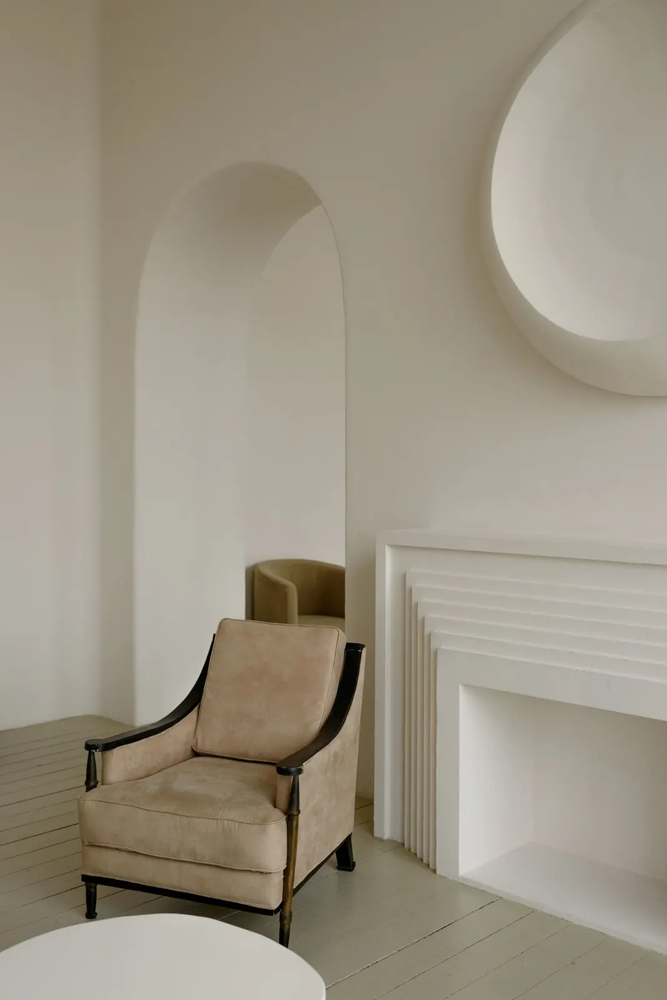
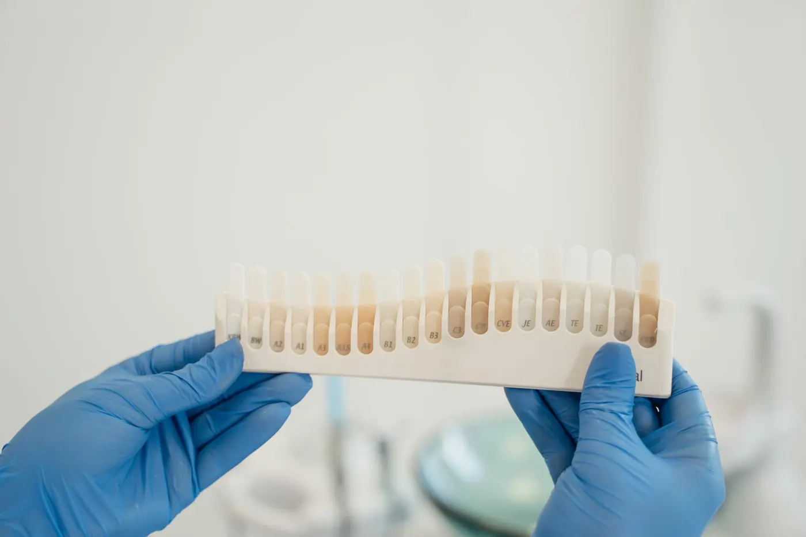
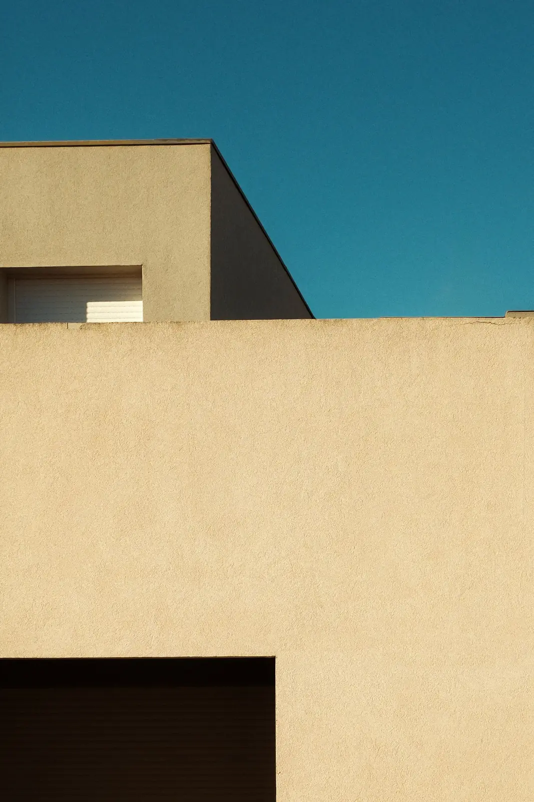
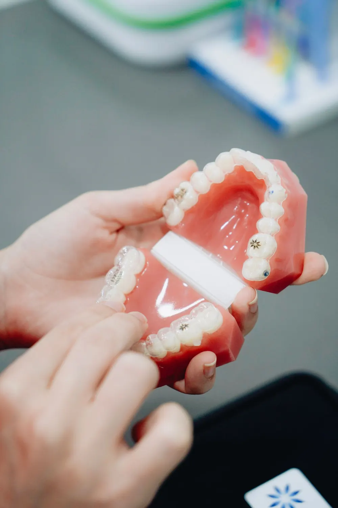
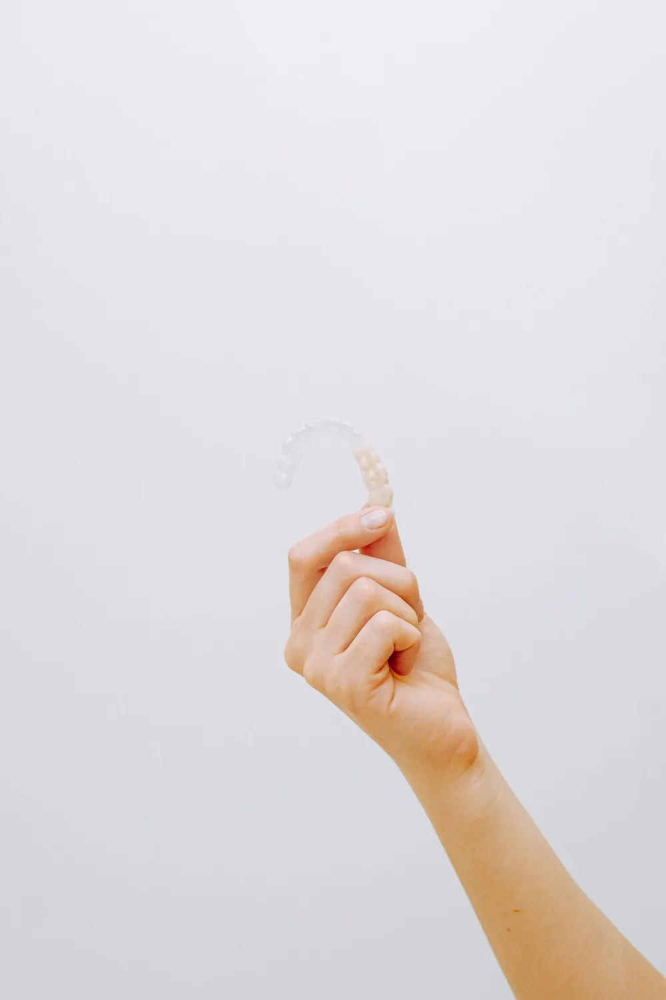
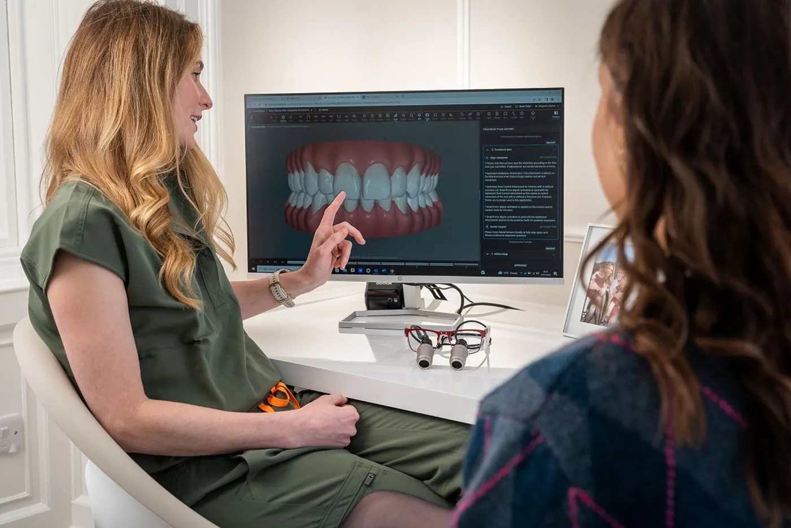
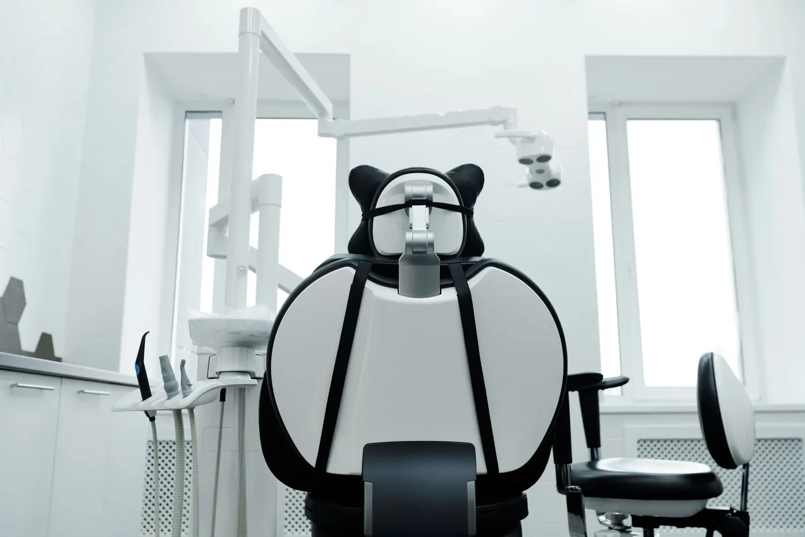
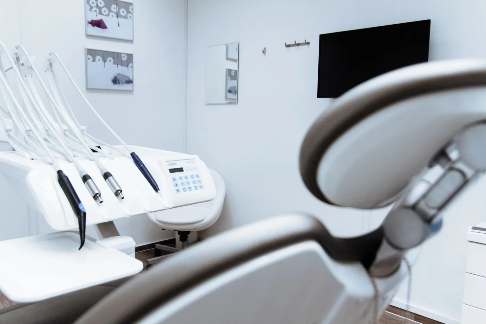
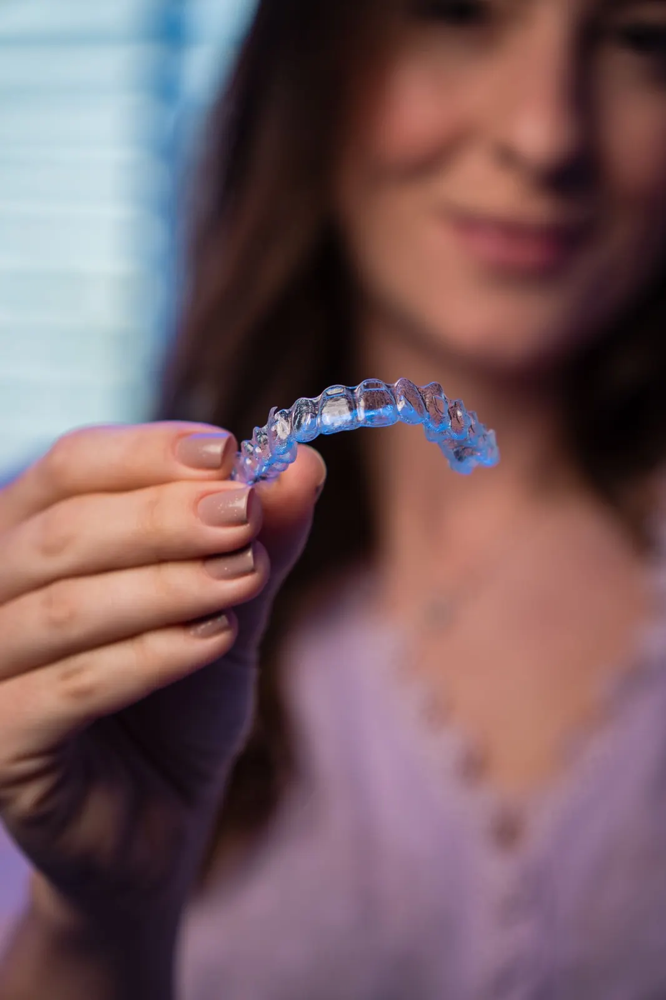

Ortodontia e estética dental · São Paulo
Um sorriso pensado nos seus termos.
Ortodontia, alinhadores e estética dental planejados com calma, a partir de quem você é. Cada decisão é explicada antes de acontecer.
- 5
- etapas, da conversa ao acompanhamento
- 3
- áreas que trabalham juntas
- 1
- plano por escrito, feito para você



01 Manifesto
Manifesto
Naturalidade não é acaso. É planejamento.
Um sorriso que parece natural é resultado de muitas decisões pequenas: a posição de cada dente, a linha da gengiva, a cor que conversa com a pele e com a idade. Nada disso deveria ser decidido com pressa.
Por isso o Atelier Oral trabalha em etapas. Primeiro entendemos você, depois estudamos o caso e só então apresentamos as opções, com o que cada uma pode e não pode fazer.
02 Especialidades
Três áreas, um só planejamento
Ortodontia, alinhadores e estética são planejados em conjunto. Muitas vezes alinhar os dentes antes evita desgastes e deixa o resultado estético mais simples.
Ortodontia
Aparelho fixo estético ou metálico para alinhar os dentes e ajustar a mordida, em adolescentes e adultos.

Ver ortodontia02Alinhadores
Placas transparentes trocadas em sequência, planejadas a partir do escaneamento da sua boca.

Ver alinhadores03Estética dental
Lentes de contato dental, clareamento e planejamento estético, com indicação individual.
Ver estética dental03 Tecnologia
Tecnologia que explica
A tecnologia ajuda a ver melhor e a explicar melhor. Quem decide é a equipe, com você.

Escaneamento intraoral
Uma ponteira pequena registra a boca em 3D, sem a massa de moldagem tradicional.
Modelos digitais
Permitem medir, comparar e estudar a mordida em detalhes, e guardar o registro de cada fase.
Simulação como apoio
Uma representação visual para conversar sobre caminhos possíveis. Não é garantia de resultado.
04 Método
Cinco etapas, sem atalhos
Role a página: cada etapa mostra o que acontece nela.

1Conversa
O que incomoda você, o que espera e a sua rotina. Sem pressa e sem proposta pronta.

2Avaliação
Dentes, gengiva, mordida e articulação. Fotos clínicas e escaneamento, sem massa.
 3
3Estudo
Com os modelos digitais, a equipe estuda o caso em reunião, fora da cadeira.
- 4
Planejamento
As opções possíveis, com prazos, cuidados e limites de cada uma.

5Acompanhamento
Consultas de controle durante e depois, para seguir o planejado.
05 Entenda as possibilidades
Antes de decidir, entender
Diagramas simples sobre situações comuns. Toque em cada um para ver o que é, como pode ser tratado e quais são os limites.
Ilustração educativa — não representa resultado de paciente
06 Profissionais
Quem cuida do seu caso
Dra. Helena Valadares
Ortodontia · responsável técnica · CRO-SP 000000 (exemplo)
Especialista em ortodontia. Coordena o planejamento dos casos de aparelho e alinhadores e acompanha cada etapa de perto.
Dr. Rafael Moretti
Dentística e estética · CRO-SP 000001 (exemplo)
Cuida de lentes de contato dental, restaurações e clareamento, sempre depois do estudo do sorriso e da saúde da gengiva.
Dra. Lívia Okamoto
Periodontia e planejamento digital · CRO-SP 000002 (exemplo)
Avalia a saúde da gengiva antes dos tratamentos e prepara os modelos digitais e as simulações usadas nas consultas.
07 Primeiro passo
Comece por uma conversa.
A primeira consulta é uma conversa com avaliação. Você sai sabendo as opções do seu caso, sem compromisso.
- EndereçoRua de Exemplo, 240 · Jardim Exemplo
- HorárioSeg. a sex., 8h às 19h · Sáb., 8h às 13h
- WhatsApp(11) 90000-0000 (exemplo)
- Como chegarMetrô, estacionamento e acessibilidade